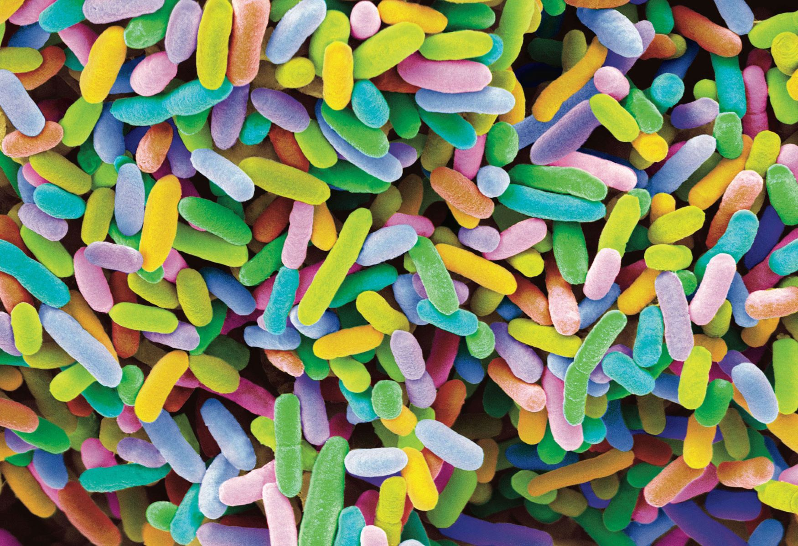

Belly Button Biodiversity Dashboard
Use the interactive charts below to explore the dataset
This project collected information about bacteria data from volunteers' belly buttons. Based on this data,
we created a interactive dashboard to visulize each volunteer's belly button biodiversity.
Select a Test Subject ID number from the dropdown menu. The individual's demographic information table and their charts will automatically respond.